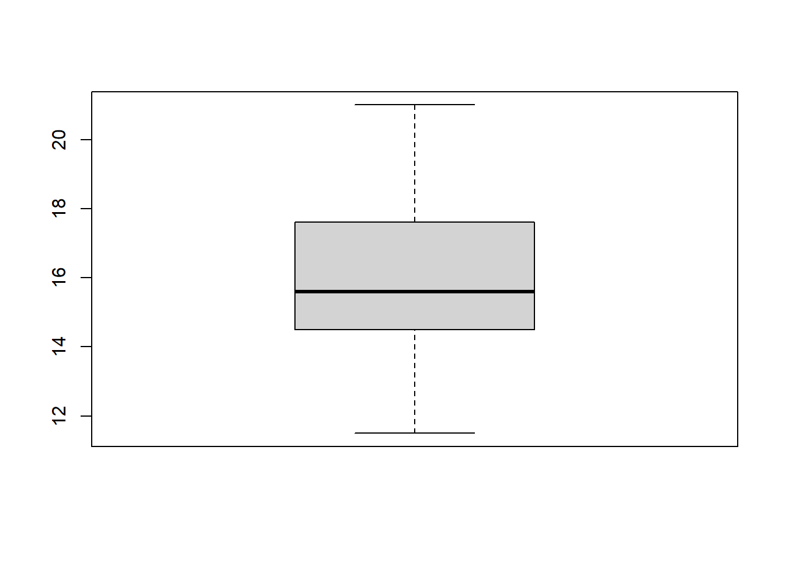

> 2+2
> 6/2*3-1
> 2/3+1
> 2/(3+1)
> #' ## Algumas funções
sqrt(4) # raiz quadrado
> 4^(1/2)
> sin(pi/2)
> 2^5
> 2**5
> log(exp(1)) #log = ln
> log10(100)
> log(100, 10) # log(quem, base)
> 1:100
> c(1, 10, 100, 1000)
> seq(1, 10, 1)
> seq(1, 10, by = 2)
> rep(1:10, times = 3)
> rep(1:10, each = 3)
> rep(1:10, each = 2, times = 3)
> #' ## Acessando ajuda
?seq
> help(seq)
#' ## Alguns objetos
#'
#' - vetores
#' - matrizes
#' - dataframe
#' - listas
#' - funções
#'
#'
#'
#' # Exemplo
#'
#' Os dados a seguir correspondem ao peso de 30 colmos de cana-de-açúcar (em g).
#'
#' ## Conjunto de dados
#'
> x <- c(11.5, 18.7, 15,
17.6, 12.4, 21,
14.4, 15.2, 16.9, 14.5,
16.2, 14.1, 15.7, 16,
15.7, 13.1, 15.2, 18,
15.1, 19.6,
18.1, 14.7, 16.4, 13.8,
18.8, 15.5, 17.6, 16.8,
15.2, 13.7)
> x[19]
> sort(x)
> order(x)
> #' ## Calculando medidas de posição e dispersão
#' - Média
mean(x)
> mean(c(11.5, 18.7, 15,
17.6, 12.4, 21,
14.4, 15.2, 16.9, 14.5,
16.2, 14.1, 15.7, 16,
15.7, 13.1, 15.2, 18,
15.1, 19.6,
18.1, 14.7, 16.4, 13.8,
18.8, 15.5, 17.6, 16.8,
15.2, 13.7))
> #' - Variância
var(x)
> #' - Desvio-padrão
sd(x)
> #' Coeficiente de variação
100*sd(x)/mean(x)
> #'
#' - Quantis (ou percentis)
quantile(x)
> quantile(x, type = 5)
> quantile(x,0.975)
> quantile(x,0.025)
> #' ### Exercício: Calcule a amplitude interquartílica
# q3 - q1
quantile(x,0.75) - quantile(x,0.25)
> #' ### Exercício: Observe e interprete o resultado dos seguintes comandos
#'
min(x)
> max(x)
> summary(x)
> range(x)
> #' ## Representação gráfica
#'
#' # Histograma
#'
> hist(x)
> hist(x,
col="red",
border="black")
> hist(x,
col="red",
border="blue",
freq=FALSE)
> #' ### Diagrama de ramo-e-folhas
> stem(x)
> boxplot(x)

> # 1-$\alpha$ = 0,95
> t.test(x, conf.level=0.95)
> #' 1-$\alpha$ = 0,99
> t.test(x,
conf.level=0.99)